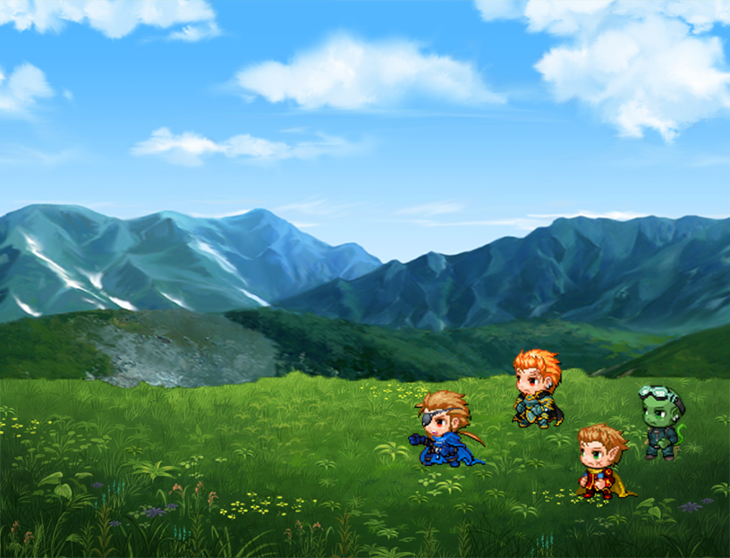
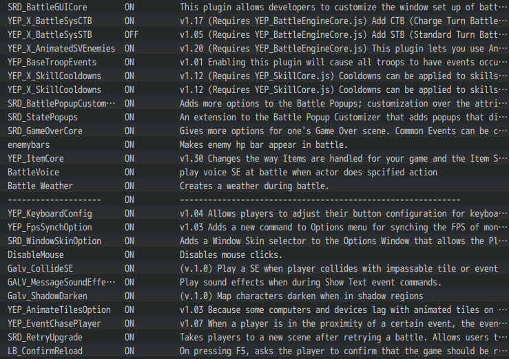
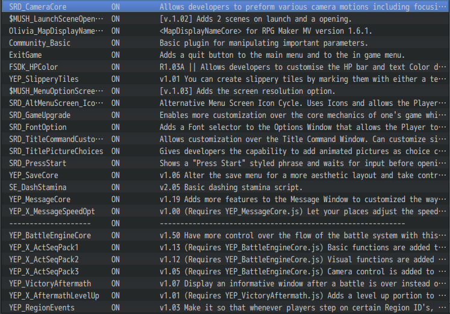
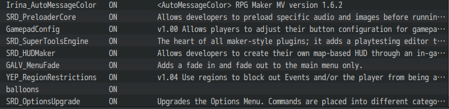
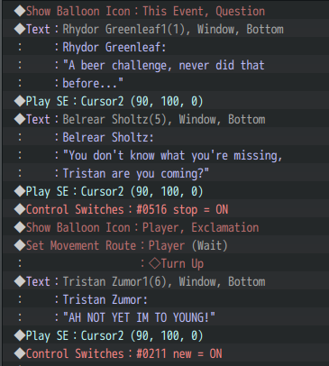
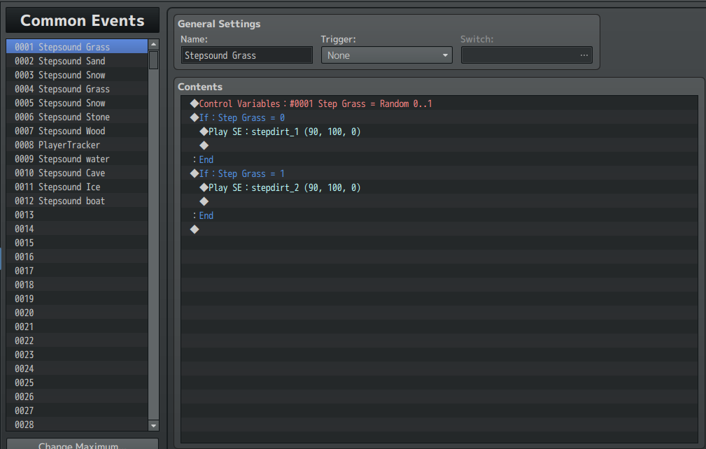

Description:
Many years ago, 4 races ruled the world named: Demolion. The Human race of Markville, The Elven race of Hermalion, The Dwarf race of Ironhills and the Monster Race of Chiaradent.
But later they discovered a new race that wanted more attention named the Endlor race, they were violent and looked like monsters, but they looked more evil and devilish. The new race attacked the 4 races and the 4 races declared war on the Endlors. Many years passed and the 4 races were victorious.
They thought they killed every single endlor, but they didn't know they were way wrong, a handfull of endlor survivors survived and lived underground preparing for the next attack, but the 4 races found out about the handfull of survivors left and they agreed to send one of their best warrior to fight the endlors and restore the peace inside of Demolion.



I started this project around 2019, when I just bought RPG Maker MV, I had alot of experience when working on this game. Like how I used plugins inside of that engine, or how I could write my stories alot better. That's how I met one of my best friend: ToastyTime. He reviewed this game and I wanted more feedback from him and he stuck around while I was working on the game.
While working on this game I used plugins inside of this engine what you could use to make the game alot better, those plugins were made in Javascript, but not written by me.



I did made the events inside of the game and what the characters do and what they are saying.

I also made a common event where if the player touches any tile they are walking on, a random footstep sound will be made, this is how I made it:

I never finished this, because it turned out that the development time is far too long. Then I went on towards Unity and never went back to the project itself, which is a shame, because I putted alot of work inside of that story, but I never finished it. Maybe I will return to it, but for now, it will be cancelled. Even if I am going to try to tell the whole story I have in mind.